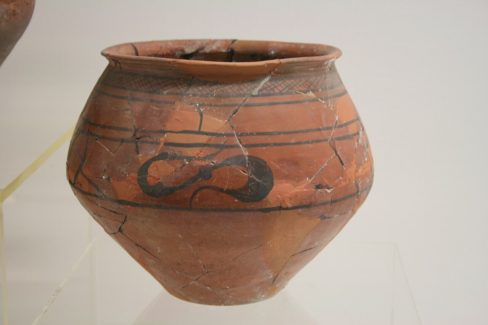
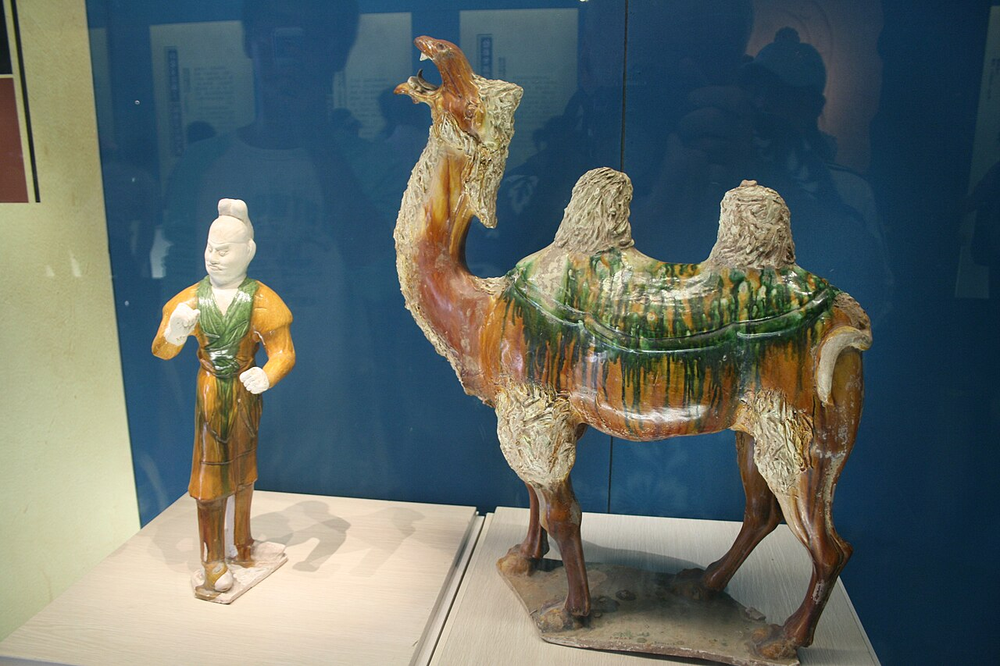
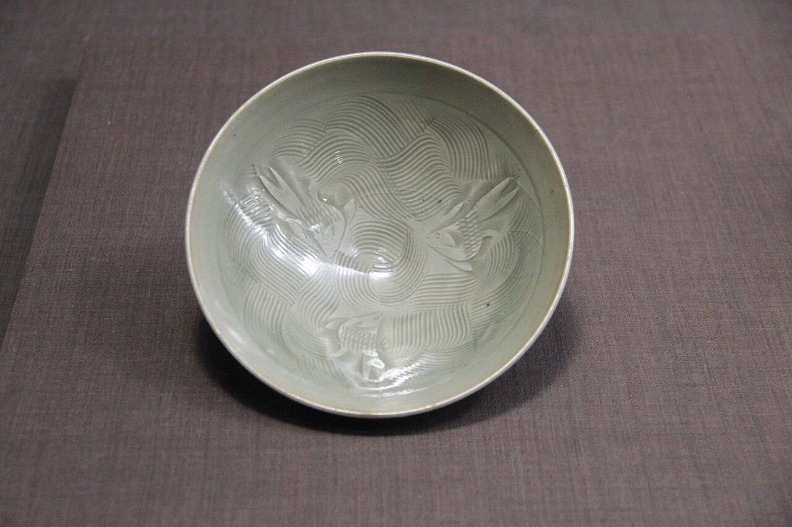
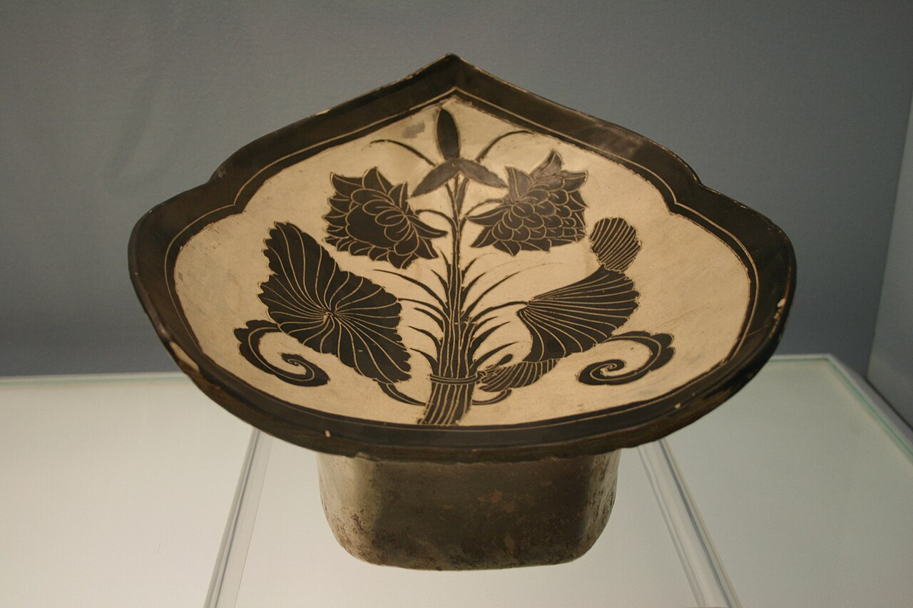
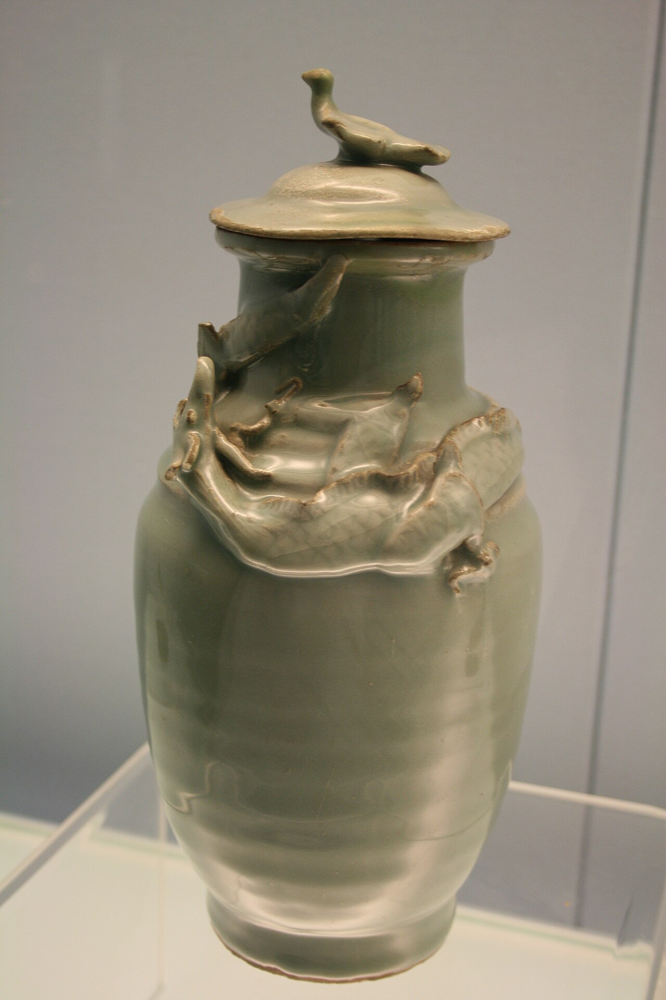
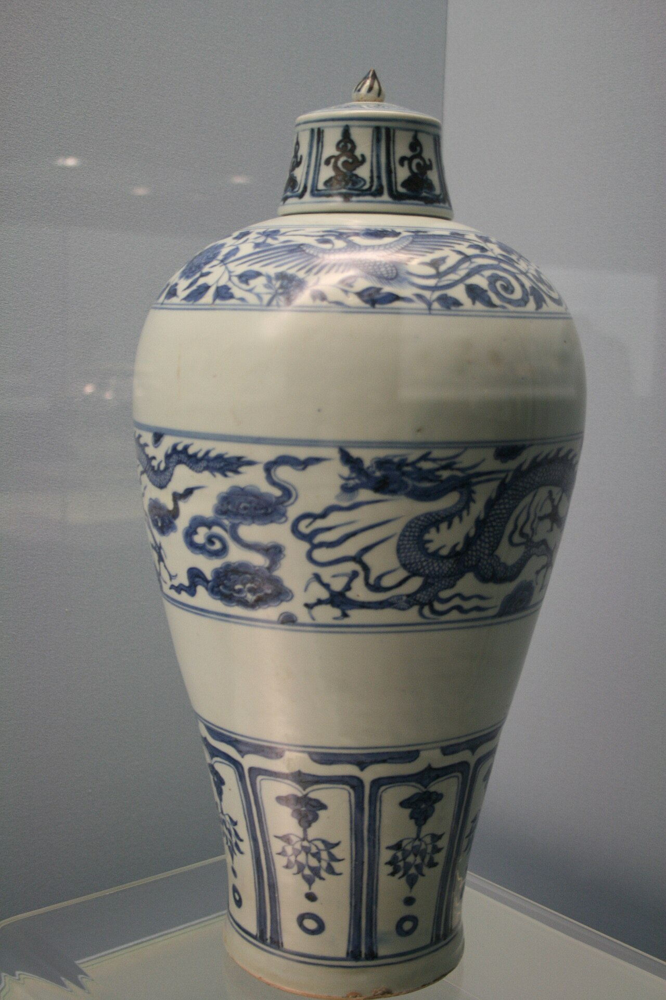
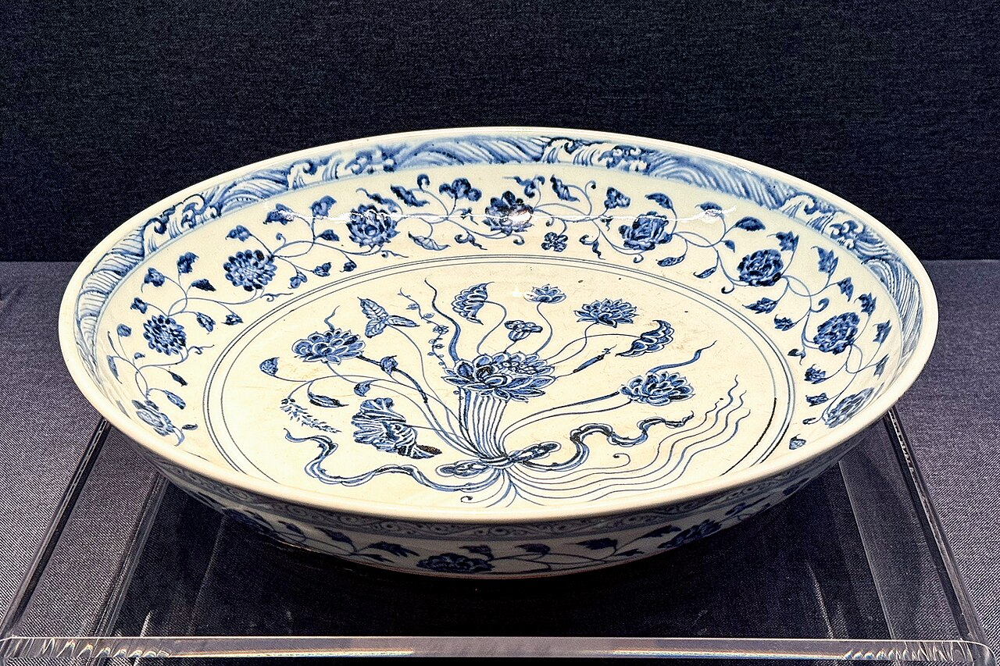
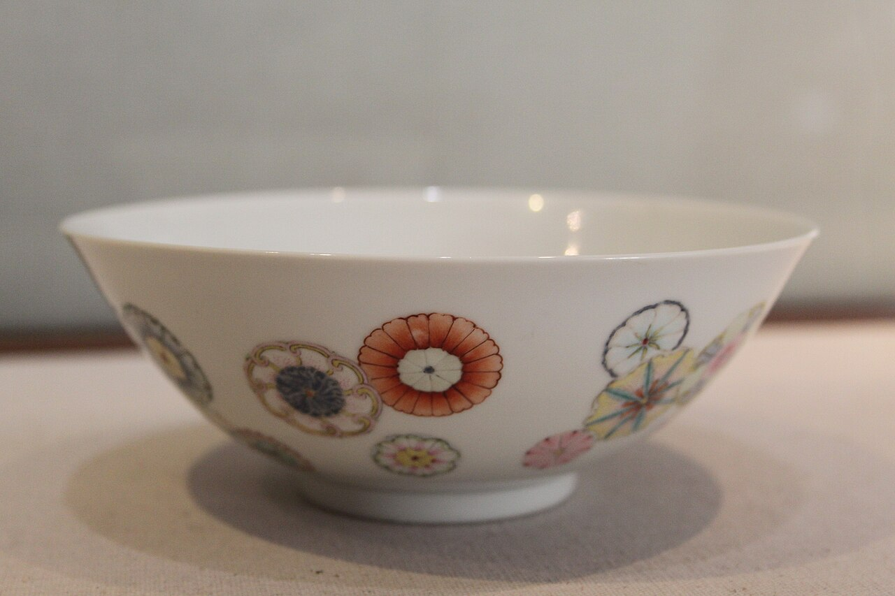
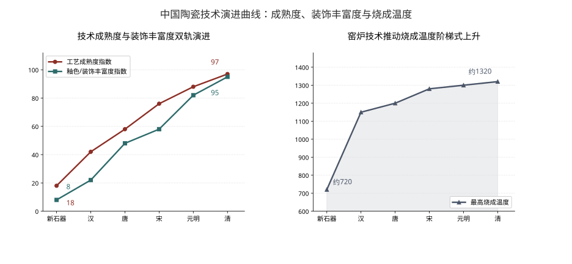
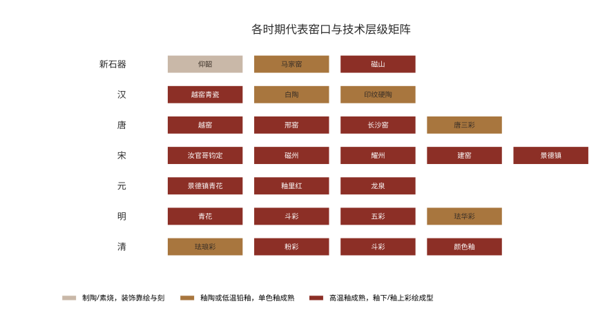

00 · 领域背景：三个基本坐标（从「名窑」叙事转向「技术」叙事）
中国陶瓷是世界上延续时间最长、体系最完整的物质文化传统之一。从新石器时代的彩陶算起已延续约八千年；若以商代龙窑出现为瓷器技术起点，也有五千余年。它不是一条单线进化史，而是胎、釉、彩、窑四套技术体系依次成熟并叠加的历史过程。

图 1 · 仰韶文化彩陶罐。器表以黑彩绘几何纹饰带并辅以网格纹样，是新石器时代彩陶装饰的典型样貌。Wikimedia Commons · CC 授权
01 · 发展现状：六段历史脉络与技术节点（约前 10000 — 当代）
六个阶段各自解决了一个「能不能」的问题：能不能烧、能不能釉、能不能装、能不能画、能不能彩、能不能精。技术链层层叠加而非相互替代。

图 9 · 中国陶瓷发展六段历史脉络时间线自制图表 · 据阶段划分绘制
一、原始瓷与彩陶时期（约前 10000 — 前 2000）龙窑雏形 · 灰釉意识
此期核心贡献是把「烧制」从偶然的物理现象变成可控工艺。新石器时代陶以泥质红陶为主，装饰手法包括堆纹、抹光、压印、刻划与彩绘。仰韶文化半坡类型的鱼纹彩陶葫芦瓶以红陶为胎，上半部整体施黑彩、下半部绘鱼纹，鱼纹以大圆眼与不对称弧线造型增强动态感；庙底沟类型的花卉纹被高度抽象概括，与几何图形交错结合。马家浜与屈家岭文化的红陶大量使用网格纹、线纹、旋涡纹，与同期纺织品花纹存在明确对应关系。
技术铺垫有二：一是龙窑的出现——商代龙窑为后续高温烧成提供窑炉形态基础；二是灰釉意识的萌芽——烧成温度不足时植物灰无法熔解成釉，工匠发现将木柴灰加水刷到陶坯表面可形成釉质层，由此从无釉陶器走向原始青瓷。
二、商周至秦汉：从原始瓷到成熟青瓷通体施釉 · 拉坯成型
此阶段完成了从无釉到有釉、釉层由薄增厚、通体施釉的关键跃迁，同时开始拉坯成型工艺与多种复合装饰技法的实践。商代龙窑窑址（如江西吴城）已出土吴城文化的原始瓷与硬纹硬陶，标志高温烧成在南方确立。
此期并存白陶、印纹硬陶、铅釉陶多条材质路线：白陶以高铝质原料成就洁白胎体；印纹硬陶以几何拍印强化器表质感；铅釉陶是低温铅釉在陶胎上的初次系统应用。
东汉完成从原始瓷到瓷的定型，以越窑青瓷为代表，实现通体施釉、釉层光润似玉。西汉釉陶实物证据显示，当时浙江地区窑工已能稳定烧制青中泛黄的高温釉，釉层清澈、玻璃质感强。
三、魏晋南北朝至隋唐：南青北白与匣钵装烧匣钵装烧 · 釉下彩绘
南北朝时期烧窑技术进一步提升，白瓷烧制成功，为后世彩绘瓷器的发展奠定基础。唐代形成「南青北白」格局：南方越窑青瓷与北方邢窑白瓷并峙。陆羽《茶经》将越窑器列为茶具之首，评价邢瓷「类银」「类雪」，白瓷中精细者「薄如蛋壳」具透影性。
长沙窑以釉下彩绘瓷与写意花鸟题材别具一格，成为釉下彩传统的重要源头。唐三彩则是低温铅釉陶器，其铅釉流淌形成的自然斑晕成为独立于实用器之外的观赏语言。
此期关键技术突破是匣钵装烧技术——以耐火匣钵盛放坯体入窑，使器物之间不再直接受火，大幅提高成品率并使釉面不受窑内杂质污染，是宋代名窑群得以技术量产的前提。

图 2 · 唐三彩骆驼与牵驼俑。铅釉在低温下自然流淌交融，形成黄、褐、绿三色斑晕。Wikimedia Commons · CC 授权
四、宋代：五大名窑与八大窑系单色釉极致化 · 装饰体系化
宋代特征是单色釉极致化与装饰技法体系化并存。五大名窑各擅胜场：汝窑以玛瑙末入釉的天青色著称，釉面开细碎纹片如鱼鳞，多裹足满釉支烧、底留芝麻粒状支钉痕；官窑「紫口铁足」、釉面开大裂纹片；哥窑以「金丝铁线」网状龟裂著称，但因窑址未确认，学界对其性质与产地长期存有分歧；钧窑在青釉中引入铜、铁等呈色元素，釉层肥厚、常见「蚯蚓走泥纹」；定窑刻印花白瓷曾为北宋宫廷御用。南宋官窑以粉青最佳，釉质润泽如玉似冰。
五大名窑专供名门望族与官家，而真正反映时代日常的是八大窑系。以长江为界，江北有定窑系、磁州窑系、耀州窑系、钧窑系，江南有龙泉窑系、景德镇青白瓷窑系、越窑系、建阳黑釉瓷窑系。
- 磁州窑——宋代北方最大的民窑体系，创烧于北宋中期、鼎盛于金代中后期。以数十种装饰技法（刻、划、剔、填彩兼用）突破五大名窑的单色釉局限，开创中国瓷器绘画装饰的先河。
- 耀州窑——始于唐、盛于宋，刻花刀法犀利，「刀刀见泥」的深刻手法造就宋代青瓷刻花之冠。
- 建窑——因北宋晚期斗茶需要而烧制黑釉茶盏，铁胎厚实，烧出兔毫、油滴等结晶釉。
- 景德镇窑——宋代以青白瓷为主，胎薄坚、釉青润、晶莹透体，因刻花与印花在迎光下若隐若现而称影青、映青、隐青；南宋中后期受定窑影响采用覆烧法，装饰由刻花转为印花。

图 3 · 北宋汝窑天青釉莲花式温碗。釉中含玛瑙末，釉色天青，釉面开细碎纹片，是宋代单色釉极致化的代表。Wikimedia Commons · CC 授权

图 4 · 北宋磁州窑白地黑花牡丹纹瓷枕。磁州窑以刻、划、剔、填彩等技法突破单色釉局限，开创瓷器绘画装饰先河。Wikimedia Commons · CC 授权

图 5 · 南宋龙泉窑粉青釉瓶。南宋后期成功烧制粉青、梅子青等标准釉色，青瓷釉色之美被推至顶峰。Wikimedia Commons · CC 授权
五、元代与明代：彩瓷体系的成型釉下彩 · 釉上彩制度化
元代开创了青花与釉里红的综合装饰方法，装饰特色为「丰满华丽、层次分明」。景德镇在元代成功烧制青花、釉里红、红釉等品种，其中釉里红以铜为呈色剂、对烧成气氛极为敏感，成品率极低，故「千红难成一」。元青花器型硕大、纹饰层次繁密，钴料多来自域外输入的铁量高的「苏麻离青」，发色浓艳并带铁锈斑。
明代是彩瓷技术体系化的时期：
- 永乐、宣德——青花成为御窑主流，宣德青花被后世奉为标准范式。
- 成化——首创青花斗彩综合装饰方法，开釉下青花与釉上彩结合的先河，斗彩鸡缸杯成为传世名品；同时创制素三彩、珐华彩、矾红描金彩等品种。
- 嘉靖、万历——采用黑彩替代青花勾线，以红、绿、黄、紫、黑描绘图案，「大明五彩」装饰繁密、色彩绚丽。
斗彩与五彩的工艺逻辑：先在坯胎上以青花勾勒轮廓并绘出需呈蓝色的部分，罩透明釉高温焙烧，再在半成品胎上以釉上彩完成全图，二次入彩炉低温烤烧，由此产生釉下青花与釉上诸彩争奇斗艳的效果。

图 6 · 元代青花盖罐。釉下钴蓝料绘制龙纹与缠枝花卉，是元代釉下彩绘工艺的代表。Wikimedia Commons · CC 授权

图 7 · 明宣德青花缠枝莲纹盘。青花属釉下彩，色料沉于釉层，画面呈色稳定、不易磨损、永不褪色。Wikimedia Commons · CC 授权
六、清代与近代：集大成与向现代转型珐琅彩粉彩 · 珠山八友 · 国瓷复兴
清代是中国瓷器史上集大成的时期。彩瓷方面：康熙时期在继承明嘉靖、万历五彩工艺基础上发明釉上蓝彩、丰富金彩色料，形成「康熙五彩」；受珐琅彩影响，瓷工把含砷的白信石掺入铅熔块制成「玻璃白」颜料，按比例加入其他色料形成深浅浓淡的「粉化」色调，创烧粉彩瓷器。雍正时期粉彩趋于成熟并达至高峰，乾隆时期趋向富丽繁复并融入轧道、描金、堆塑等工艺。珐琅彩（正式名称「瓷胎画珐琅」）工艺源自西洋铜胎画珐琅，由宫廷造办处专属烧制、不流入民间，存世量极少。雍正斗彩突破单纯青花与五彩的结合，将粉彩与釉下青花相结合，开创斗彩加粉彩、斗彩加金彩新工艺。
色釉方面：康熙朝高温铜红釉成功烧造，标志明代中期失传高温铜红釉的恢复；郎窑红、豇豆红、霁红三种高温红釉中以豇豆红烧制难度最大、基本无大件器物；另创矾红釉、娇黄釉、孔雀蓝釉、珊瑚红釉、甜白釉、祭蓝釉、洒蓝釉、郎红釉、豇豆红釉、乌金釉、紫金釉、茶叶末釉等名品。雍正时期另创炉钧釉、淡黄釉、窑变釉、金红釉等新釉。
近代转型的关键一步是文人瓷画的崛起。清末安徽籍艺人程门、金品卿、王少维、汪晓棠等人将黄公望一脉中国画浅绛彩画法移植到陶瓷釉上，率先把诗、书、画、印合一的文人画审美形式引入陶瓷，开创浅绛彩瓷画。
民国时期出现中国第一个陶瓷艺术流派——珠山八友。1928 年秋王琦、王大凡发起组织「月圆会」，参与者为王琦、王大凡、汪野亭、邓碧珊、程意亭、刘雨岑、何许人、毕伯涛、徐仲南、田鹤仙共十人。他们以瓷代纸、以画入瓷，在浅绛彩基础上发展出「新粉彩」文人瓷画，把景德镇传统陶瓷装饰从纯工艺的器物装饰提升为独立的绘画艺术门类，完成彩瓷绘画工匠向「瓷画家」的身份转变。
新中国成立后制瓷业经合作社、研究所、艺术瓷厂等组织形式转型，1950—1970 年代在「文艺为工农兵服务」导向下开展写生创作。改革开放后，德化白瓷、景德镇手工瓷等传统工艺在文旅融合与活态传承机制下复兴，形成当代国瓷文化名片。

图 8 · 清雍正粉彩花卉纹盘。粉彩在白瓷釉面填「玻璃白」后以彩料洗染，入彩炉低温烘烧，呈色淡雅柔丽又称软彩。Wikimedia Commons · CC 授权
02 · 典型案例：四个可核验的实证切面（申遗 · 窑址 · 断代 · 沉船）
四个案例分别对应「申遗制度」「考古发掘」「断代修正」「海洋考古」四条证据链，均含机构、时间与可核验数字。

图 10 · 中国陶瓷技术演进曲线：成熟度、装饰丰富度与烧成温度自制图表 · 纵轴指数为相对示意值，非实测数据

图 11 · 各时期代表窑口与技术层级矩阵自制图表 · 据各窑口工艺层级归类绘制
03 · 影响与成效：技术、产业、传播、传承（四条并行的作用线）
陶瓷史的影响不只落在器物上——技术链条、产业集中、外向传播与活态传承四条线互相咬合，构成今天的国瓷文化名片。
装饰技法的四个阶段：宋元釉上加彩 → 元代青花釉里红综合装饰 → 明代成化青花斗彩 → 清代青花斗粉彩与青花玲珑综合装饰。装饰体系从单层走向多层、从单色走向多元。坯体装饰（刻线、堆雕并平面化处理）、釉色装饰（从固有色走向人为控制，景德镇目前颜色釉种类达上千种）、综合装饰三类方法长期并存。
技术体系累加而非替代
四套技术体系依次解锁、层层叠加。烧成温度（商代龙窑起）→ 釉的适配性（东汉成熟青瓷定）→ 装饰语汇（唐代匣钵装烧至宋代刻印花）→ 彩绘制度（元代釉下、明清釉上）。
产业格局四要素集中
宋代八大窑系分布跨越长江南北，元明以后景德镇逐渐取代各地方窑口成为全国制瓷中心。这一转变的实质是原料、燃料、技术与市场四要素的集中。2026 年以产业遗产类型申遗成功，正是这种集中格局的物质证据。
对外传播载体性影响
景德镇手工瓷业遗存被认定「自 16 世纪起成为世界手工瓷业生产中心」，其青花瓷「推动了中华文明、文化的全球化表达」。德化瓷依托宋元时期泉州港这一「东方第一大港」外销，影响范围遍及亚洲各地与非洲。德国奥拉宁堡瓷器室藏有纪年 1644 年的德化瓷塑像。
活态传承申遗不是终点
当地以「保护第一、有效利用、全民共享」为理念，划定老城核心区、遗产区与缓冲区，完成 108 项保护工程与 75 平方公里环境整治，并通过数字化展示与老工业遗产活化让千年瓷业遗存「见人、见物、见生活」。景德镇古陶瓷基因库依托 2000 万枚出土地点明确、地层清晰的御窑遗址古瓷片建成，引入扫描电镜、X 射线荧光光谱仪、激光共聚焦拉曼光谱仪检测胎釉彩纹饰。
04 · 趋势展望：四条正在发生的变化（断代 · AI · 活态保护 · 贸易体系）
以下四条不是预测，而是已经能从近期公开信息与研究中读出的方向；每条都给出可核验的技术依据与精度边界。
05 · 结论：六条核心判断（只列结论，不含建议）
以下六条为本综述的核心判断，每条均可回溯到上文的具体证据链。
-
1 中国陶瓷五千年史的本质是四条技术链的依次解锁 ：烧成温度（商代龙窑起）、釉的适配性（东汉成熟青瓷定）、装饰语汇（唐代匣钵装烧至宋代刻印花）、彩绘制度（元代釉下、明清釉上）。四者层层叠加而非相互替代。
-
2 陶瓷史分期应以技术断代为主轴，名窑体系是次一级结构 。「五大名窑」是明清文献与后世收藏的归纳产物，学界对哥窑窑址尚未确认；相比之下，耀州窑 2 万㎡窑址发掘与 300 余万件标本整理、清凉寺汝官窑址十四次发掘发现 20 多座窑炉这类系统性考古工作，才是断代可靠性的实际支撑。
-
3 2026 年 7 月 25 日景德镇手工瓷业遗存列入《世界遗产名录》，是中国陶瓷史研究范式转换的标志性事件 ：研究对象从「瓷器」扩展为「产业体系」，五个组成部分（生产中心、古窑址、瓷土矿、瓷石矿、窑柴产区）完整覆盖原料—燃料—烧造—外销链条，委员会认定其符合标准 3 与标准 4。
-
4 科技方法已改变断代精度，但存在明确边界 。XRF 成分指纹在宏观窑系判定上精度可观，在元明钴料判别上已有可验证特征峰差异；但其微米级检测深度无法穿透清代粉彩复层釉，且成分数据必须与类型学、地层学交叉验证才能用于定年。
-
5 清代彩瓷的技术分野在「釉下稳定」与「釉上艳丽」之间 ：珐琅彩、粉彩、斗彩、五彩均在釉上二次低温烧成（780—850℃），其质感优势不可替代，因而乾隆后期造办处停止烧制正统珐琅彩后，后世多以粉彩仿制但始终无法复刻其独有质感。这是工艺知识不可逆流失的典型案例。
-
6 陶瓷装饰从器物装饰升格为独立艺术门类的分水岭在民国 。珠山八友把浅绛彩奠定的文人画形式与新粉彩工艺结合，完成彩瓷工匠向「瓷画家」的转变；这一转变直接连通了此后新中国瓷画创作与改革开放后的当代国瓷复兴。
06 · 证据与局限：强度分级与六条局限（可核验性自评）
下表按结论类型分级证据强度；六条局限明确标出哪些数值属示意、哪些问题学界尚无定论。
| 结论类型 | 证据来源 | 可核验性 |
|---|---|---|
| 景德镇申遗事实（时间、组成、面积、标准） | 世界遗产委员会决议、国家文物局与新华社报道 | 高多源一致，含官方一手发布 |
| 各窑址考古面积与出土数量 | 新华社报道、地方文物考古研究院发掘报告 | 高机构+数字+时间齐备 |
| 沉船年代与出水文物 | 国家文物局考古研究中心等三家机构联合调查、北京大运河博物馆展览记录 | 高多机构联合发布 |
| 历代工艺细节与品名 | 景德镇陶瓷专业期刊文献、中国非物质文化遗产网讲稿 | 中高专业期刊，部分为作者综述 |
| 器物个体信息 | 文物数据库结构化记录（名称、年代、藏馆、尺寸、介绍） | 中高标准化著录 |
| 成分比 SiO₂ 约 75%、Al₂O₃ 约 18% 等 | 技术检测科普文献 | 中文献转引，未核对原始检测报告 |
| 烧成温度区间与指数类数值 | 本报告自制图表，基于各阶段工艺特征的相对示意 | 低示意性，非实测数据 |
局限说明6 条
- 烧成温度为区间估计值而非实测序列。图中温度曲线基于各阶段工艺特征的相对示意（新石器时代约 720℃、清代约 1320℃），非同一技术标准下的连续实测数据。不同窑口的实际烧成温度存在差异，趋势含义成立但具体数值不可作为工程依据。
- 「新石器时代」下限存在学术争议。中国境内陶器的起源年代与最早陶器的具体认定，学界仍有不同意见，本报告采用约公元前 10000 年的常见表述，属约数。
- 哥窑问题尚未解决。因窑址未确认，哥窑瓷器的产地、性质与是否属于单一窑口在学界仍有不同观点，本报告在宋代部分仅列出争议现状而未作断代。
- 知识库与数据库覆盖有限。文物数据库按馆藏有限收录且不按知名度排序，知识库文献覆盖亦不足以支撑「最具代表性」类判断；因此代表性器物清单以联网检索建立的窑口与工艺谱系为主线，数据库仅用于补充单件器物的标准著录信息。
- 配图与器物存在不完全对应。部分配图为同类器物的博物馆展陈或馆藏图片，用于呈现该时代工艺特征，非特定一件传世名窑的标准器。
- 成分数据未溯源至原始报告。XRF 与拉曼光谱的具体数值与特征峰来自技术文献的转引，未核对原始检测报告与实验条件。
07 · 参考来源（21 条 · 按发布时间倒序）
按发布时间倒序排列。条目 20—21 为探元知识库与文物数据库的内部著录。
-
中央纪委国家监委网站.《深度关注丨千年窑火 生生不息》.2026-08-02. https://www.ccdi.gov.cn/toutiaon/202608/t20260802_504695.html
-
北京青年报.《同样是彩瓷 它们到底怎么区分》.2026-08-31. https://epaper.ynet.com/html/2026-08/31/content_451466.htm
-
国家文物局.《窑火淬匠心 瓷韵传世界——「景德镇手工瓷业遗存」申遗成功引发热议》.2026-07-28. http://www.ncha.gov.cn/art/2026/7/28/art_722_204008.html
-
中国网.《申遗成功！「景德镇手工瓷业遗存」列入〈世界遗产名录〉》.2026-07-25. https://big5.china.com.cn/gate/big5/cul.china.com.cn/2026-07/25/content_43466896.htm
-
国际在线.《视频丨「景德镇手工瓷业遗存」申遗成功！我国世界遗产达 61 项》.2026-07-25. https://news.cri.cn/20260725/4559da54-101a-4bdb-aa66-a29cec8f7b5e.html
-
北京市人民政府.《377 组件深海出水文物再现海上丝绸之路 南海沉船「驶」近大运河畔》.2025-12-17. https://www.beijing.gov.cn/fuwu/bmfw/sy/jrts/202512/t20251217_4346685.html
-
新华社（腾讯新闻转载）.《新华视点｜千年耀州窑：从青瓷瑰宝到文旅新篇》.2025-10-04. https://news.qq.com/rain/a/20251004A033DH00
-
中国文物保护技术协会文物分析检测技术专业委员会.《文物分析检测技术专业委员会会议暨 2026 年学术交流会在重庆召开》.2026-05-15. https://www.cactch.org.cn/detail.html?id=10&contentId=1352
-
中国社会科学网.《创新精神铸就世界瓷都千年辉煌》.2024-08-30. https://cssn.cn/skgz/bwyc/202408/t20240830_5774633.shtml
-
中国文物网.《宋代瓷器八大窑系反映时代审美 升值空间大》. http://wenwuchina.com/a/2/192380.html
-
搜狐.《何以德化》. https://www.sohu.com/a/976740602_120756848
-
网易新闻.《景德镇「搬」来整座宋代沉船？阳江这场神仙联展，文物活起来了！》. https://c.m.163.com/news/a/L0KDRIRP05502L65.html
-
今日头条.《古陶瓷基因库的四套检测技术，如何给瓷片做「全基因组测序」？》. https://www.toutiao.com/a7664878464394183204
-
景德镇市人民政府.《用一把泥土和世界对话》. https://www.jdz.gov.cn/zwzx/jrcd/t1102172.shtml
-
百度百科.《清凉寺汝官窑址》词条. https://baike.baidu.com/view/860056.html
-
中国非物质文化遗产网. 李文跃.《现当代景德镇传统彩瓷的艺术发展与创新》. https://www.ihchina.cn/Article/Index/detail?id=24788
-
百度百科.《耀州窑》词条. https://baike.baidu.com/item/%E8%80%80%E5%B7%9E%E7%AA%91/1687957
-
北京微析技术研究院.《古陶瓷检测过程中常用的无损检测方法有哪些》. http://www.weixiyjy.com/s/4283.html
-
新浪收藏.《涨姿势：清三代瓷器釉彩创新品种大起底》.2015-11-03. https://collection.sina.com.cn/cqty/2015-11-03/doc-ifxkhcfn4325191.shtml
-
景德镇陶瓷期刊文献（景德镇陶瓷研究与发展协会主办）.《试论陶瓷综合装饰》《中国陶瓷发展简述》《浅谈颜色釉的装饰特点》等》.2007—2023.（探元知识库）
-
知识库器物著录. 釉陶器（西汉，浙江省博物馆）、龙泉窑青釉盘（元，太仓博物馆）、游鱼纹彩陶葫芦瓶（新石器时代，西安半坡博物馆）、彩陶尖底瓶（新石器时代，西安半坡博物馆）、三彩陶站牛（唐，康乐县博物馆）等.（探元文物库）
图片来源说明：本页配图共 8 张器物图，均取自 Wikimedia Commons 公共授权资源（CC 授权），已在各图图注中标注。3 幅趋势图表均为本报告基于公开考古数据与工艺特征自制，非第三方资料；其中烧成温度与成熟度指数为相对示意值，不可作为工程依据。